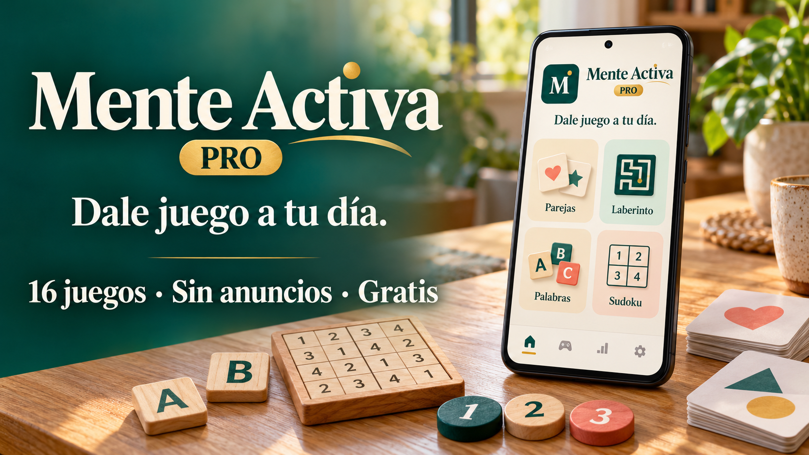

Elige tu ritmo
Suave, Medio o Reto. Texto grande, secuencias más lentas y opción para reducir las animaciones decorativas.

ANDROID · JUEGOS DE ENTRETENIMIENTO
Elige entre 16 juegos de memoria, atención, palabras, cálculo y lógica. Con tres dificultades, botones amplios y todo el tiempo que quieras para pensar.
Suave, Medio o Reto. Texto grande, secuencias más lentas y opción para reducir las animaciones decorativas.
Tres juegos que cambian cada día. Puedes salir y continuar con los juegos pendientes en la misma dificultad. Las partidas a medias empiezan de nuevo.
Guarda tus preferidos, combina juegos en un paseo personalizado y consulta hasta 300 partidas y la actividad de los últimos siete días.
Mente Activa PRO es una colección de juegos de entretenimiento. No es una herramienta sanitaria ni está supervisada por un profesional sanitario. Las puntuaciones describen partidas: no evalúan tu salud, inteligencia o edad cerebral ni garantizan mejoras de memoria.
Descarga el APK oficial, ábrelo y sigue los avisos de Android. Si el sistema lo solicita, permite instalar desde el navegador o gestor de archivos que estés usando.
Instala la nueva versión encima de la anterior, sin desinstalarla. Las versiones mantienen el mismo identificador y la firma permanente. Desinstalar o borrar el almacenamiento elimina los datos locales.
En Ajustes → Actualizaciones puedes buscar una versión nueva o desactivar la búsqueda automática. La app abre la descarga oficial; Android te pide confirmar la instalación.
Archivo: Mente_Activa_PRO_1_5_0_PACK6.apk.
Consultando descargas acumuladas en GitHub…
SHA-256 del archivo publicado:efca9487bd4d39fb533252b8927c00585fc73095ac3c92cb1b993fafac1d3b40
El contador suma las descargas de todas las versiones disponibles en GitHub Releases, no personas ni instalaciones únicas. Información sobre análisis y seguridad →
Sin cuentas, anuncios, analítica ni compras. Los juegos y la selección diaria funcionan sin conexión. Se guardan en el dispositivo los ajustes, favoritos, la lectura del aviso y hasta 300 partidas con juego, dificultad, aciertos, puntuación, fecha y modalidad.
La selección diaria añade el día correspondiente a la partida. El historial y las puntuaciones no se envían a la Biblioteca ni a terceros. Puedes borrarlos desde Ajustes → Borrar todos mis datos. La copia de seguridad de Android está desactivada.
La app usa acceso a Internet solo para consultar el catálogo público HTTPS de la Biblioteca, alojado en GitHub Pages. La búsqueda automática está activada inicialmente y puedes desactivarla. El alojamiento recibe información técnica de la conexión, como la dirección IP. Al elegir actualizar, el navegador gestiona la descarga desde GitHub y Android pide confirmar la instalación.
No solicita ubicación, cámara, micrófono, contactos ni acceso al almacenamiento. Información completa de privacidad →